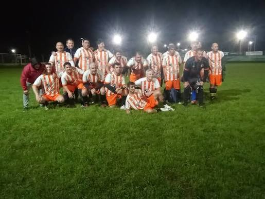
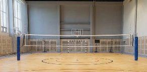
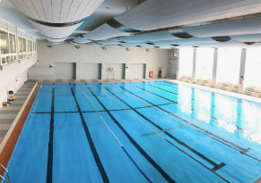
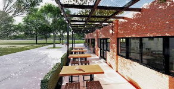
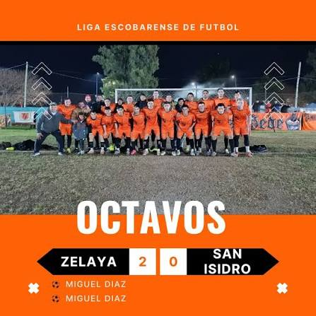
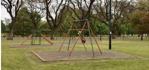

Recorré Nuestras Instalaciones
Invertimos constantemente en infraestructura segura, iluminada y accesible para toda la comunidad de Zelaya.






Servicios para Socios y Visitantes
- Vestuarios completos con duchas y casilleros individuales.
- Estacionamiento interno gratuito para bicicletas y autos.
- Enfermería y área cardioprotegida durante todo el horario de apertura.
- Alquiler de canchas y quincho con reserva previa en secretaría.